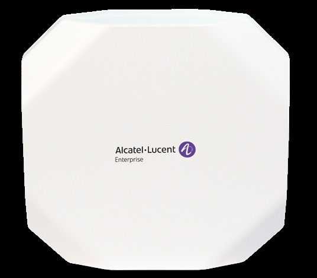

bp-ap1301-datasheet

R（触发场景）
- 普通办公/教室中低密度 Wi-Fi 6 覆盖，预算敏感，接入交换机为 GbE + 802.3af
- 核对 AP1301（OAW-AP1301-RW/ME/US）规格与配件行项
- 判断 1301 → 1301H（墙面）→ 1331（中高端）的升级边界
I（核心理念)
室内 Wi-Fi 6 入门主力：双频 2x2，1.77Gbps，802.3af 13.1W 即全功能——全产品线里供电要求最低的室内 Wi-Fi 6 机型之一，现网 af 交换机零改造直接用（P2，<<
A1（选型差异）
- vs AP1301H：同为 1.77G/2x2，但 1301H 是墙面形态（1 上联 + 4 下联含 1 PSE + RJ45 直通 + BLE5），容量翻倍 1024；房间级选 H，开放办公选 1301
- vs AP1331：1331 是 4x4+4x4、3.55G、双 5GE、专用扫描+BLE、TPM2.0；要 wIPS 全时防护或 BLE 定位必须上 1331
- vs AP1501：客户要 Wi-Fi 7 且接入层有 2.5GE 时，1501 是对应的入门档
A2（规格速查表）
| 项目 | 规格 | 页码 |
|---|---|---|
| 射频架构 | 双射频：5GHz ax 2x2:2（1.2Gbps，2SS HE80）+ 2.4GHz ax 2x2:2（574Mbps，2SS HE40） | << |
| 聚合速率 | ~1.77Gbps | << |
| MIMO/速率档 | DL/UL MU-MIMO、OFDMA（DL/UL RUs）、1024-QAM、BSS Coloring、ER、TWT、TxBF；HE20/40/80 | << |
| 以太网口 | 2x 10/100/1000Base-T（RJ-45），PoE 802.3af，EEE | << |
| PoE/供电 | af 13.1W = Unrestricted（无降级链）；DC 48V±5%，DC 优先于 PoE | << |
| USB-IoT | 1x USB 2.0 Type C（5V 500mA） | << |
| 蓝牙 | 无 BLE/Zigbee 射频 | << |
| 天线 | 内置全向 2x2：3.3dBi @2.4G / 3.3dBi @5G | << |
| 发射功率 | 聚合 21dBm@2.4G / 21dBm@5G（每链 18dBm）；巴西 21dBm | << |
| 工作温度 | 0°C ~ 45°C；存储 -40~70°C | << |
| Mount | 吊顶/壁装，套件另购（OAW-AP-MNT-B/W/C） | << |
| 容量 | 每射频 8 SSID（总 16）；512 客户端 | << |
| 尺寸重量 | 180x180x36mm，574g；MTBF 1,118,457h（127.67 年） | << |
| 管理平台 | OV2500 4K AP / Express 集群 255 / OmniVista Cirrus；SNMPv2+v3、SSHv2 | << |
| 安全 | WPA3 Enterprise with CNSA/Personal(SAE)、OWE（硬件就绪待软件激活*）、DPI（配合 OmniVista）、wIPS/wIDS | << |
| 认证 | Wi-Fi 6、Passpoint R3、UL2043、EN 60601-1（医疗） | << |
| 订购 | OAW-AP1301-RW（禁 US/Egypt/Japan）/ -ME（Egypt/Israel 域）/ -US | << |
E（适用场景）
- 中低密度企业办公、分支：af 供电 + 双 GbE 全兼容现网（P2，<<
>>） - 三种部署模式同一镜像：Express 集群 / OV2500 本地 / Cirrus 云，切换不改硬件（<<
>>） - 需要 Stanley/Aeroscout RTLS 的轻量定位场景（<<
>>）
B（限制与坑）
- OWE（Enhanced Open）当时仅"硬件就绪、未来软件更新支持"（X22，<<
>>），交付前确认软件版本 - 无专用扫描射频、无 BLE：wIPS 只能 part-time 扫描（<<
>>），全时防护与 IoT 定位做不到 - 双口均为 GbE：2x2 HE80 单射频 1.2G 已接近回程上限，多千兆环境考虑 1331
- 吊装/壁装套件全部另购（X20，<<
>>）；Midspan 配件 PD-9001GR/AT/AC 不含电源线（<< >>） - RW 版 "Not for use in US, Egypt, Japan"（X18，<<
>>），1301 时期埃及限制还在名录里 - Wi-Fi 6 代数据表 SNMP 列 v2+v3（对比 Wi-Fi 7 代只列 v2，X12 关联条）
来源：bp-stellar-ap-datasheets fulltext.md p6-13；verified.md P2/P19/X18/X20/X22/F1
仅供内部学习使用 · 教材版权归 ALE Training Services 所有